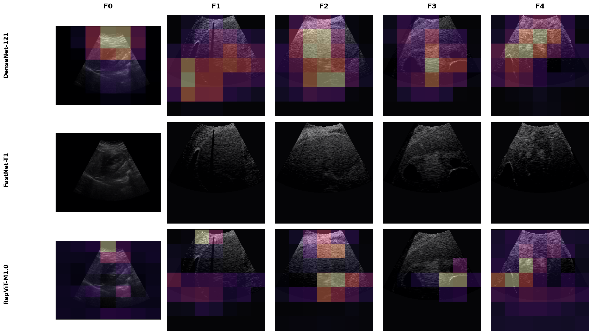

Nine CNN Architectures for Five-Class METAVIR Staging with Explainable AI
Braincore Indonesia · Universitas Esa Unggul · Universitas Brawijaya · Universitas Terbuka · Universitas Hasanuddin · Universitas Jember — ICITRI 2026
Motivation & Research Gap
Dataset & Benchmark Design
Results: the top cluster is not separable
Deployment Implications & Explainability
Limitations & Conclusion
Liver fibrosis progresses to cirrhosis and hepatocellular carcinoma if undetected
Staging uses the METAVIR scale (F0–F4); the F2 boundary often decides treatment
Biopsy is accurate but invasive; B-mode ultrasound is accessible but hard to stage — adjacent stages look deceptively similar
> Key question: which CNN backbone should be deployed, and on what grounds?
Existing approaches:
Task usually collapsed to binary or three-class — easier, but discards severity information
Accuracy from a single seed, no stability evidence
Ranking claimed without statistical testing
Our contribution:
Full F0–F4, ordinal structure preserved
Nine CNNs, one identical protocol, 34 multi-seed runs
Ordinal + calibration metrics, not accuracy alone
Grad-CAM check on liver texture attention
Source: public heterogeneous liver ultrasound release (Joo et al. 2023)
6,323 images, 955 patients, five ordinal classes
Two hospitals, 8 scanners, 6 manufacturers (2009–2019)
Biopsy-anchored labels, radiologist-reviewed
Natural class imbalance kept — it reflects clinical prevalence
Stratified split (fixed)
| Split | n |
|---|---|
| Train | 3,794 |
| Validation | 1,265 |
| Test | 1,264 |
Resize 224 \times 224, ImageNet normalization, class-weighted sampling, minimal augmentation
| Band | Model | Params |
|---|---|---|
| Heavy | ResNet-50 | 23.52 M |
| EfficientNet-V2-S | 20.18 M | |
| DenseNet-121 | 6.96 M | |
| Compact | RepViT-M1.0 | 6.41 M |
| FastNet-T1 | 6.32 M | |
| Light | MobileNetV4-Small | 2.50 M |
| Tiny-CNN | 0.50 M | |
| Small-CNN | 0.25 M | |
| Depthwise-CNN | 0.25 M |
One recipe for all nine
ImageNet init; the three custom CNNs from scratch
SGD momentum 0.9, cosine LR, batch 32, early stopping
Seeds 41–44 \rightarrow 34 valid runs
Test split held fixed, so seeds vary training, not the data
A ~94\times parameter spread — how much capacity does this task need?
Ordinal-aware
QWK — partial credit for near misses
MASE — mean absolute stage error
Clinical risk & trust
Adjacent / severe error rate — off by one vs. off by \geq 2 stages
ECE — is the confidence value believable?
Accuracy and macro-F1 alone cannot tell a one-stage miss from an F0 \to F3 jump
| Model | n | Acc. | Macro-F1 | QWK | Sev. Err | ECE |
|---|---|---|---|---|---|---|
| DenseNet-121 | 4 | 98.3 ± 0.3 | 97.5 ± 0.4 | 0.995 | 0.3 | 1.4 |
| FastNet-T1 | 3 | 98.2 ± 0.6 | 97.5 ± 0.9 | 0.994 | 0.3 | 0.8 |
| RepViT-M1.0 | 4 | 98.1 ± 0.3 | 97.2 ± 0.4 | 0.995 | 0.3 | 0.8 |
| EfficientNet-V2-S | 4 | 98.0 ± 0.3 | 97.2 ± 0.5 | 0.994 | 0.2 | 0.8 |
| ResNet-50 | 4 | 97.4 ± 0.5 | 96.3 ± 0.6 | 0.992 | 0.5 | 1.1 |
| MobileNetV4-Small | 3 | 93.9 ± 1.9 | 91.6 ± 2.6 | 0.970 | 2.2 | 2.1 |
| Small-CNN | 4 | 92.7 ± 1.0 | 90.0 ± 1.2 | 0.965 | 2.4 | 4.9 |
| Tiny-CNN | 4 | 83.3 ± 2.8 | 77.7 ± 3.8 | 0.907 | 6.2 | 4.9 |
| Depthwise-CNN | 4 | 82.0 ± 1.4 | 77.1 ± 1.7 | 0.877 | 7.6 | 7.0 |
Four backbones form a top cluster near 98% — no runaway winner
Pairwise exact McNemar, paired per image
| Model A | Model B | p |
|---|---|---|
| DenseNet-121 | FastNet-T1 | 0.904 |
| DenseNet-121 | RepViT-M1.0 | 0.353 |
| DenseNet-121 | EfficientNet-V2-S | 0.261 |
| FastNet-T1 | RepViT-M1.0 | 0.396 |
| FastNet-T1 | EfficientNet-V2-S | 0.581 |
| RepViT-M1.0 | EfficientNet-V2-S | 0.923 |
So what decides?
No pair differs at \alpha = 0.05 — smallest p is 0.26
Accuracy cannot justify DenseNet over EfficientNet
ECE varies ~2\times across the cluster: 0.8% to 1.4%
In triage, the confidence score gates human review
The most consequential result of this benchmark is a negative one
Confusion matrix — DenseNet-121, 4 seeds pooled
| True \ Pred | F0 | F1 | F2 | F3 | F4 |
|---|---|---|---|---|---|
| F0 | 1692 | 0 | 0 | 0 | 0 |
| F1 | 0 | 659 | 22 | 4 | 3 |
| F2 | 0 | 15 | 603 | 12 | 2 |
| F3 | 0 | 5 | 12 | 660 | 11 |
| F4 | 0 | 0 | 0 | 2 | 1354 |
Per-stage F1: 100.0 / 96.8 / 95.0 / 96.4 / 99.3
74 (1.5%) miss by one stage, only 14 (0.3%) by two or more
No F0 ever called fibrotic; no F4 ever called below F3
F2 is hardest for every backbone — difficulty is a property of the task
Top cluster: ~5-point spread across stages. Tiny-CNN: >35 points
Compact backbones win on cost
RepViT-M1.0 and FastNet-T1: top-cluster accuracy at substantially lower FLOPs, latency, and memory than DenseNet-121
MobileNetV4-Small: ~87% fewer FLOPs, 2.8\times faster, for a 4-point accuracy cost
Positioning
Tiny custom CNNs lose up to 16 points — the intermediate stages are what capacity buys
Defensible as a triage aid, not an autonomous diagnostic replacement
Low-confidence and middle-stage cases hand off to a clinician
Accuracy cannot separate the top cluster — cost and calibration are the tie-breakers

Rows: DenseNet-121, FastNet-T1, RepViT-M1.0. Columns: F0–F4.
Attention concentrates on liver parenchyma texture, not background, and shifts smoothly as severity increases
Intermediate stages are the most diffuse — matching where the confusion matrix puts the errors
Single dataset. No cross-center external validation yet.
Image-level splits. The release carries no subject identifiers, so frames from one examination can span train and test.
Consequently, absolute accuracies are optimistic relative to a patient-disjoint protocol — especially for the extreme stages.
What survives: identical protocol, statistical indistinguishability of the top cluster, the ~2\times calibration spread, and the concentration of errors on intermediate boundaries.
Conclusion
A top cluster of four backbones is statistically indistinguishable — accuracy alone cannot justify a choice
Calibration and cost are the defensible tie-breakers
Errors are overwhelmingly adjacent (1.5%), not severe (0.3%)
Future Work
Patient-disjoint external test set — a precondition for any absolute claim
Ordinal-aware losses encoding stage ordering
Uncertainty-aware training for safer decision support
Thank You
Questions?